The Unsupervised Sigle Input Intrinsic Image Decomposition (USI3D)
directly learns the latent feature of reflectance and shading from unsupervised and uncorrelated data,
and relies on neither labelled training data nor hand-crafted priors.
Try it here for a better understanding of intrinsic image decomposition. (Each of results below is generated through our USI3D)
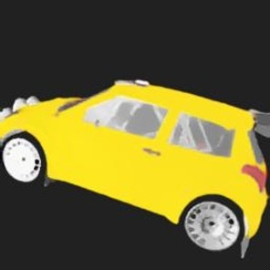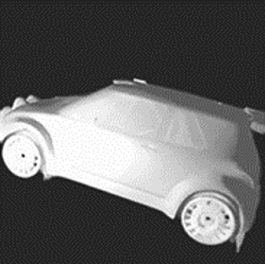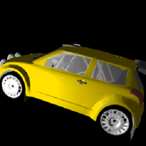
|
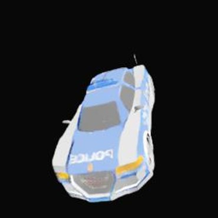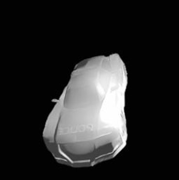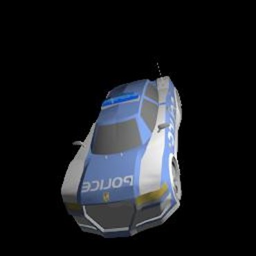
|
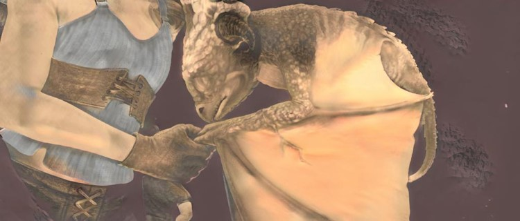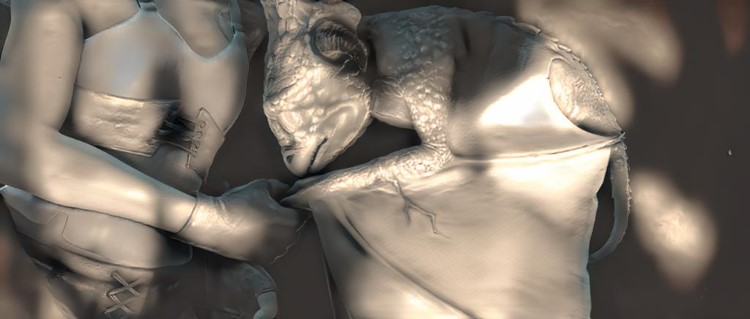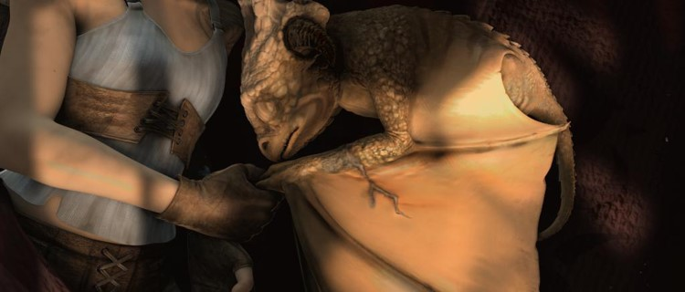
|
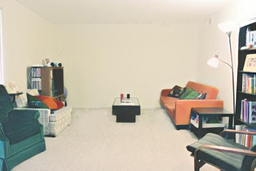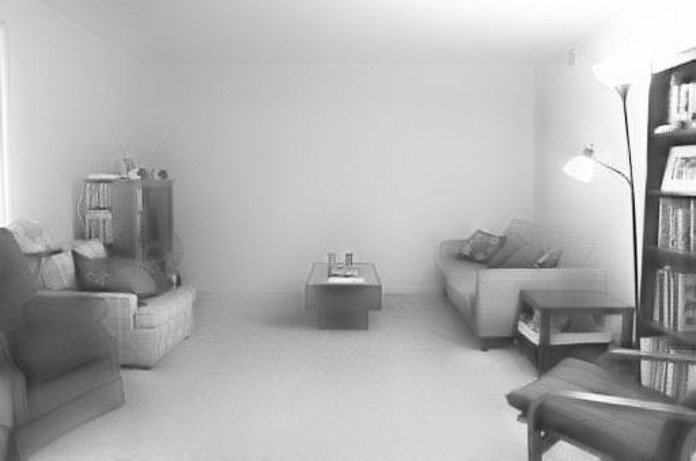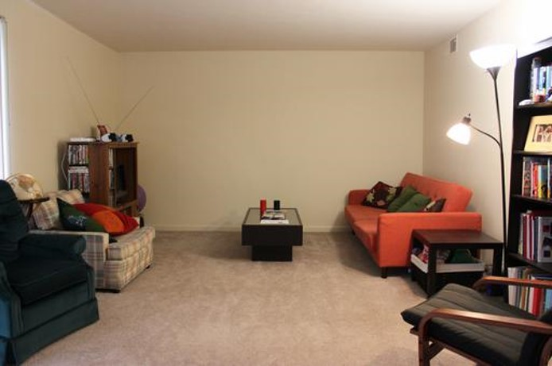
|
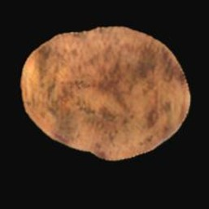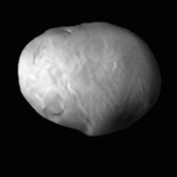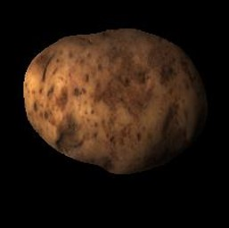
|
Motivation
Previous intrinsic image decomposition algorithms suffer such limitations:
- Optimization based methods are not likely to cover complex scenes.
- Supervised learning methods require a mass of labelled training data, which have obvious shortcomings: 1) number of these images are too limited, 2) lack of realistic, 3) annotations are too sparse.
- Semi-supervised learning methods require a series of related images as input (or for train).
In recent years, unsupervised image-to-image translation methods (Cycle GANs, Zhu, et al, 2017) have demonstrated a remarkable ability to learn the mapping from two image domains. there is still a great gap between unsupervised image-to-image translation between and intrinsic image decomposition because 1) image-to-image are fully statistics driven whereas intrinsic image decomposition is physic-based, 2) the translated image can be various of modalities while the intrinsic images of an input image are explicit. Thus, the image-to-image translation method is not directly adaptable to intrinsic image decomposition.
Our USI3D method provides an novel unsupervised learning architecture for single input intrinsic image decomposition.
What is USI3D?
Our paper describes a framework for unsupervised single image intrinsic image decomposition. USI3D allows us to learn intrinsic image decomposition with un-related data triplets:

Our method learns intrinsic image decomposition in an unsupervised fashion where the ground truth reflectance and shading is not available in the training data.
How does USI3D work?
To make the task tractable and as with previous works, we make the following three assumptions:
- Domain invariant content. Physically, the natural appearance, the reflectance and the shading are all the appearance of a given object.
- Reflectance-shading independence. Physically, reflectance is the invariance against lighting and orientation while shading is the variance.
- The latent code encoders are reversible. In detail, it assumes an image can be encoded into the latent code, which can be decoded to image at the same time.
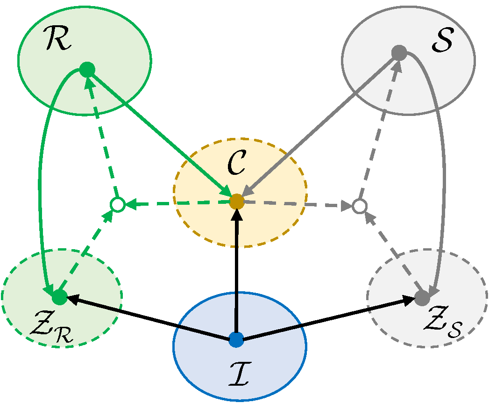
Relationships among three assumptions.

The proposed architecture.
More Visual Results on Benchmark Datasets
More results on MPI Sintel benchmark and IIW dataset are shown as following two figures.

Visual results on MPI Sintel benchmark. Note that MSCR and FY18 are supervised methods that can only serve as reference.
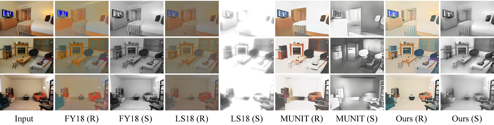
Visual results on IIW dataset.
Related Work
 Yu Li, Michael S. Brown, Single Image Layer Separation using Relative Smoothness.. CVPR 2014.
This paper addresses extracting two layers from an image where one layer is smoother than the other. The problem is formulated in a probabilistic framework and an optimization scheme is described to solve this regularization with only a few iterations.
Yu Li, Michael S. Brown, Single Image Layer Separation using Relative Smoothness.. CVPR 2014.
This paper addresses extracting two layers from an image where one layer is smoother than the other. The problem is formulated in a probabilistic framework and an optimization scheme is described to solve this regularization with only a few iterations.
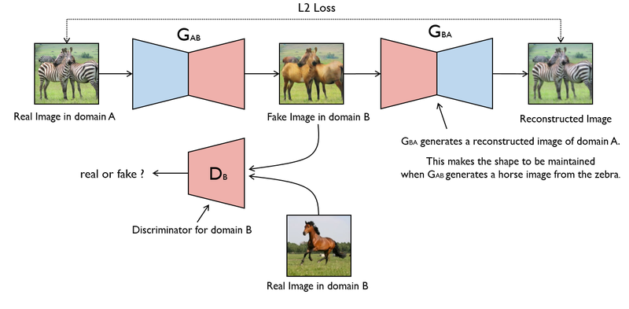 Jun-Yan Zhu, Taesung Park, Phillip Isola, and Alexei A Efros. Unpaired image-to-image translation using cycle consistent adversarial networks. ICCV, 2017. CycleGAN: Add cycle consistent to image-to-image translation.
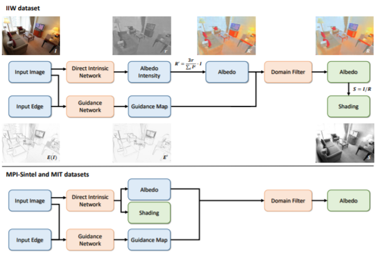 Qingnan Fan, Jiaolong Yang, Gang Hua, Baoquan Chen, and DavidWipf. Revisiting deep intrinsic image decompositions. CVPR, 2018. This paper solves the intrinsic image decomposition problem using a unified fully supervised architecture that produces state-of-the-art results, with a minimal computational footprint, whether trained on weakly labeled pairwise comparison from IIW data or dense ground truth images from MIT or MPI-Sintel datasets.
 Xun Huang, Ming-Yu Liu, Serge Belongie, and Kautz Jan. Multimodal unsupervised image-to-image translation. In ECCV, 2018.
MUINT: presents a framework for multimodal unsupervised image-to-image translation. The model achieves quality and diversity superior to existing unsupervised methods and comparable to state-of-the-art supervised approach.
Xun Huang, Ming-Yu Liu, Serge Belongie, and Kautz Jan. Multimodal unsupervised image-to-image translation. In ECCV, 2018.
MUINT: presents a framework for multimodal unsupervised image-to-image translation. The model achieves quality and diversity superior to existing unsupervised methods and comparable to state-of-the-art supervised approach.
How to cite
Bibtex
@inproceedings{liu2020usi3d,
title={Unsupervised Learning for Intrinsic Image Decomposition from a Single Image},
author={Liu, Yunfei and You, Shaodi and Li, Yu and Lu, Feng},
booktitle={CVPR},
year={2020}
}
Acknowledgments: This work is partially supported by the National Natural Science Foundation of China (NSFC) under Grant 61972012 and Grant 61732016, and Baidu academic collaboration program.